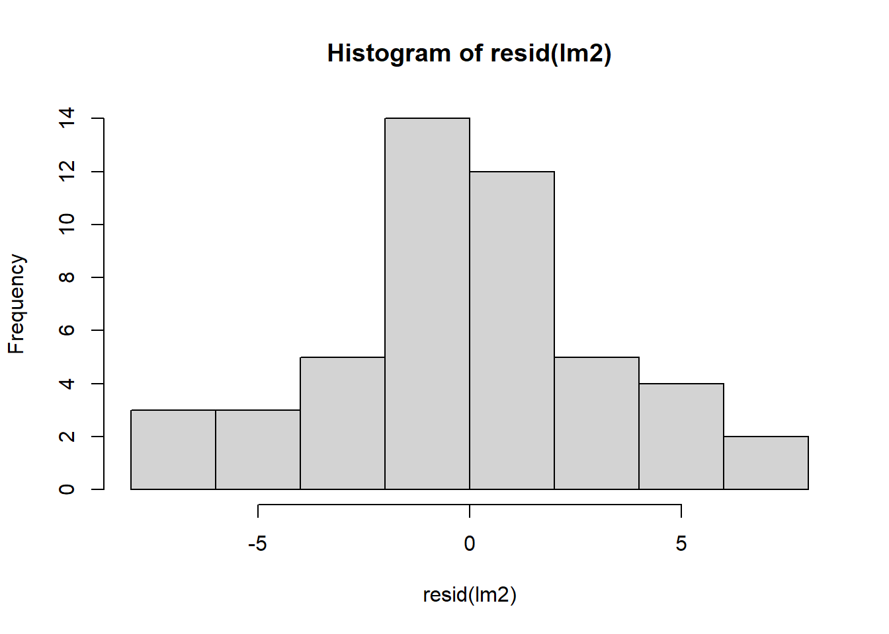
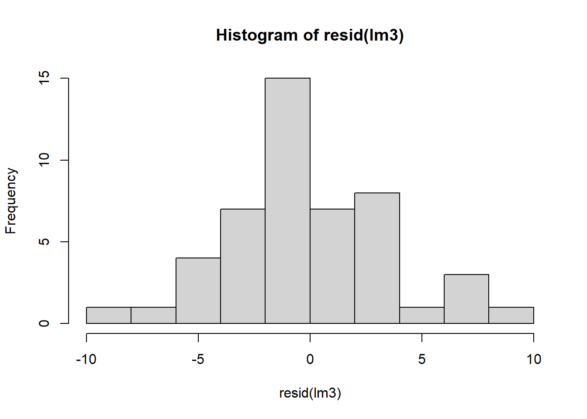
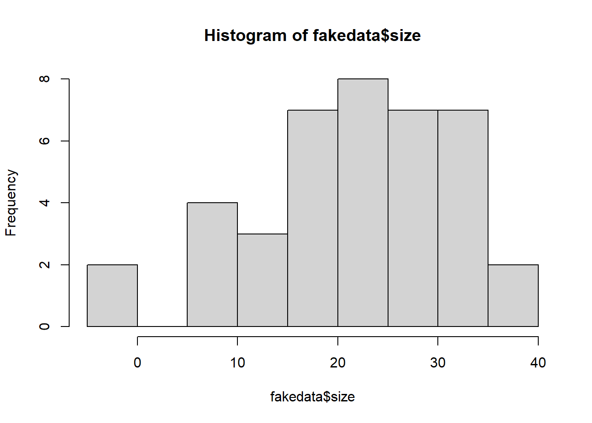

5 Mixed-effect models
After completing this module, students will be able to:
5.1 Differentiate between fixed and random effects
5.2 Interpret output for fixed and random effects in R
5.3 Design experiments with blocks, repeated measures, and fixed effect treatments
5.1 Interactions in statistical models
Before we learn about random effects, we will briefly cover interactions in statistical models. We will need the following libraries:
library(tidyverse)
library(car) ### helpful for analyzing linear models
library(emmeans) ### helpful for getting means from linear models
library(multcompView)
library(glmmTMB)
library(performance)For this section we will construct data using some code. For this example, we need to “doctor” up a data set. We will use the InsectSprays data set (from previous examples) but we will make a few changes. Don’t worry about the changes, but the code below does this. The main one is that we have added a new column to the dataset called ‘weeds’, which represents the amount of weed cover in the plot.
Let’s plot the raw data to show the count values as a function of spray types using boxplots:
Figure 5.1: Plot of insect count data.
We want to look at pairwise means between these spray types. To do this we can use the emmeans package and set the pairwise arguments from the emmeans function as pairwise ~ spray. We need to apply this function to a linear model (basically an ANOVA) that assesses the counts as a function of the spray type. The pairwise comparisons are seen in the ‘contrasts’ section of the output below:
## $emmeans
## spray emmean SE df lower.CL upper.CL
## A 14.50 1.26 43 11.961 17.04
## B 20.33 1.26 43 17.794 22.87
## C 2.08 1.26 43 -0.456 4.62
## F 16.67 1.26 43 14.127 19.21
##
## Confidence level used: 0.95
##
## $contrasts
## contrast estimate SE df t.ratio p.value
## A - B -5.83 1.78 43 -3.276 0.0108
## A - C 12.42 1.78 43 6.973 <.0001
## A - F -2.17 1.78 43 -1.217 0.6198
## B - C 18.25 1.78 43 10.249 <.0001
## B - F 3.67 1.78 43 2.059 0.1830
## C - F -14.58 1.78 43 -8.190 <.0001
##
## P value adjustment: tukey method for comparing a family of 4 estimatesIt would also be helpful to view counts as a function of weed cover. We can do this using facet_wrap() and geom_smooth:
## `geom_smooth()` using formula = 'y ~ x'
Figure 2.2: Insect counts plotted against weed cover for the four spray treatments.
5.1.1 ANCOVA: multiple intercept model
In the previous example we ran an ANOVA with only a categorical predictor. ANOVAs have long been taught to be used for categorical predictors only if your response variable is continuous. This is not entirely accurate considering that an ANOVA is the same thing as a linear model which can use continuous predictors.
For this part, let’s run a model that assesses counts as a function of both a categorical and continuous variable, spray type and weed cover. This would be a biologically reasonable model to run as we see from the plots above that our counts are not only different based on spray types but also vary along a weed cover gradient where, in most cases, there are higher insect counts associated with higher weed cover.
Our goal should therefore be to assess the effects of spray types on counts while accounting for this relationship between counts and weed cover. We can incorporate both types of predictors in the same linear model format as before. With the inclusion of a continuous variable, an ANOVA is often called an ANCOVA (an analysis of covariance). Here is the basic form of the linear model with a categorical and continous variable:
\[y = \beta_{0} + \beta_{i} + \beta_{1}*x + \varepsilon\]
\(y\) is the response variable
\(\beta_{0}\) is the intercept
\(\beta_{i}\) is the adjustment to the intercept for each group \(_{i}\)
\(\beta_{1}\) is the slope
\(x\) is the predictor variable and
\(\varepsilon\) are the residuals.
Let’s run our ANCOVA model:
Let’s get an ANOVA table with Type II sums of squares (see Box 5.1 for overview of Sums of Squares and differences with SAS Type III):
## Analysis of Deviance Table (Type II Wald chisquare tests)
##
## Response: count
## Chisq Df Pr(>Chisq)
## spray 228.168 3 < 2.2e-16 ***
## weeds 51.318 1 7.854e-13 ***
## ---
## Signif. codes: 0 '***' 0.001 '**' 0.01 '*' 0.05 '.' 0.1 ' ' 1Note: Don’t use the base anova()!
If we want to look at the model coefficients we can use summary():
## Family: gaussian ( identity )
## Formula: count ~ spray + weeds
## Data: d
##
## AIC BIC logLik deviance df.resid
## 254.7 265.9 -121.4 242.7 42
##
##
## Dispersion estimate for gaussian family (sigma^2): 9.2
##
## Conditional model:
## Estimate Std. Error z value Pr(>|z|)
## (Intercept) 7.69502 1.29175 5.957 2.57e-09 ***
## sprayB 2.88374 1.30463 2.210 0.0271 *
## sprayC -13.64507 1.24977 -10.918 < 2e-16 ***
## sprayF 1.48599 1.24159 1.197 0.2314
## weeds 0.21271 0.02969 7.164 7.85e-13 ***
## ---
## Signif. codes: 0 '***' 0.001 '**' 0.01 '*' 0.05 '.' 0.1 ' ' 1There is quite a bit in that output and its difficult to piece together. What does it all mean?!?! Really all we want to do is calculate the estimated means for each group once we’ve accounted for the effect of weed cover. With emmeans we can just that – that is, calculate estimated marginal mean for each group (ie. groups means after accounting for the effect of weeds). We can extract the emmeans means (ie. group means after accounting for the effect of weeds):
## $emmeans
## spray emmean SE df lower.CL upper.CL
## A 15.71 0.892 42 13.915 17.51
## B 18.60 0.908 42 16.765 20.43
## C 2.07 0.875 42 0.303 3.84
## F 17.20 0.879 42 15.428 18.97
##
## Confidence level used: 0.95
##
## $contrasts
## contrast estimate SE df t.ratio p.value
## A - B -2.88 1.30 42 -2.210 0.1370
## A - C 13.65 1.25 42 10.918 <.0001
## A - F -1.49 1.24 42 -1.197 0.6322
## B - C 16.53 1.26 42 13.107 <.0001
## B - F 1.40 1.28 42 1.094 0.6952
## C - F -15.13 1.24 42 -12.199 <.0001
##
## P value adjustment: tukey method for comparing a family of 4 estimatesIf we want to plot these readouts from the emmeans output then we first need to convert this table into a data frame using as.data.frame():
Now that we have saved the emmeans outputs into a data.frame we can extract intercepts and add slopes into new dataframe. We can do this by using the `at=list(weeds=0)’ in emmeans to specify that we want to means of each spray treatment when the covariate weeds is equal to zero (in other words, the intercepts for each group). We also extract the slope manually from the saved model.
lm1i_coef2 <- as.data.frame(emmeans(lm1i,
~spray,
at=list(weeds=0)))
lm1i_coef2$slope <- coef(lm1i)[5]We can now plot the data with the fitted model and also color in specific values of importance. We can color code the different intercepts as well as the different means:
ggplot(data=d, aes(x=weeds,y=count)) +
geom_point() +
facet_wrap(~spray) +
geom_abline(data=lm1i_coef2,
aes(intercept=emmean, slope=slope)) +
geom_point(data=lm1i_coef2,
aes(x=0,y=emmean),color="red") +
geom_point(data=lm1i_coef,
aes(x=mean(d$weeds),y=emmean),
color="blue", size=2)## Warning: Removed 4 rows containing missing values or values outside the scale range
## (`geom_abline()`).Figure 2.8: Plot of insect counts against weed cover for each spray type. Red dots represent intercepts and blue dots represent emmeans.
Box 5.1. Sums of Squares In car::Anova() the Type II sums of squares is the default and is preferred over Type I or III. Type II SS are calculated based on the principal of marginally, meaning the test statistic for each term in the model is calculated after all other terms excluding the term’s high-order relatives. How the car package calculates SS is different from SAS. In SAS, Type III SS are almost always preferred. In car::Anova() Type II are similar to Type III in SAS, although there are some differences. See the help for ??car::Anova for additional information. Long story short, Type II SS are preferred in car::Anova(). |
5.1.2 ANCOVA: multiple intercept AND slope model
In the previous example above we ran a ANCOVA to account for variation around the intercept. The idea being: weed cover percentages are associated with insect counts and therefore they need to be accounted for because different spray types were done across a gradient of weed cover. For example, in the previous plot, Spray A tended to have plots with low weed cover, whereas Spray B tended to have plots with high weed cover (mostly >40%). Therefore, we assumed that insect counts, and therefore the intercepts per spray type, would be different. The previous model does a good job at capturing these different intercepts for each spray type.
There is one problem with the previous model, though. Look at the fitted regression line for Spray C – it doesn’t fit that well. The intercept looks way too low, the slope looks too steep, but the emmean estimate looks ok. If we wanted to also account for different slope values across the grass cover gradient then we can do so by including an interaction term between spray type and weeds. This would be done by coding in the interaction as spray:weeds into the model predictors as shown below.
This is how we do an ANCOVA with multiple intercept and slopes:
The above code essentially translates to: “Use a linear model to assess count as a function of the additive effects of spray and weeds as well as the interactive effect of the two predictors.
Another shorthand way to code the above would be:
## Formula: count ~ spray * weeds
## Data: d
## AIC BIC logLik df.resid
## 235.0966 251.9375 -108.5483 39
##
## Number of obs: 48
##
## Dispersion estimate for gaussian family (sigma^2): 5.39
##
## Fixed Effects:
##
## Conditional model:
## (Intercept) sprayB sprayC sprayF weeds
## 5.619629 2.440333 -2.441188 0.613378 0.277584
## sprayB:weeds sprayC:weeds sprayF:weeds
## -0.009947 -0.306581 0.018897Let’s get an ANOVA table and a summary of the model as we did in the previous examples:
## Analysis of Deviance Table (Type II Wald chisquare tests)
##
## Response: count
## Chisq Df Pr(>Chisq)
## spray 389.083 3 < 2.2e-16 ***
## weeds 87.510 1 < 2.2e-16 ***
## spray:weeds 33.852 3 2.129e-07 ***
## ---
## Signif. codes: 0 '***' 0.001 '**' 0.01 '*' 0.05 '.' 0.1 ' ' 1## Family: gaussian ( identity )
## Formula: count ~ spray + weeds + spray:weeds
## Data: d
##
## AIC BIC logLik deviance df.resid
## 235.1 251.9 -108.5 217.1 39
##
##
## Dispersion estimate for gaussian family (sigma^2): 5.39
##
## Conditional model:
## Estimate Std. Error z value Pr(>|z|)
## (Intercept) 5.619629 1.677717 3.350 0.000809 ***
## sprayB 2.440333 3.111865 0.784 0.432921
## sprayC -2.441188 2.545417 -0.959 0.337532
## sprayF 0.613378 2.227141 0.275 0.783001
## weeds 0.277584 0.048074 5.774 7.74e-09 ***
## sprayB:weeds -0.009947 0.073238 -0.136 0.891963
## sprayC:weeds -0.306581 0.067566 -4.537 5.69e-06 ***
## sprayF:weeds 0.018897 0.060668 0.311 0.755434
## ---
## Signif. codes: 0 '***' 0.001 '**' 0.01 '*' 0.05 '.' 0.1 ' ' 1From the ANOVA table we can see all three terms (the two main effects as well as the interaction) are all highly significant. The summary() output is difficult to make sense of. Once again we can use emmeans to calculate the estimated marginal mean for each group (ie. groups means after accounting for the effect of weeds):
## NOTE: Results may be misleading due to involvement in interactions## $emmeans
## spray emmean SE df lower.CL upper.CL
## A 16.09 0.724 39 14.620 17.55
## B 18.15 0.808 39 16.517 19.78
## C 2.09 0.670 39 0.729 3.44
## F 17.41 0.677 39 16.042 18.78
##
## Confidence level used: 0.95
##
## $contrasts
## contrast estimate SE df t.ratio p.value
## A - B -2.065 1.080 39 -1.904 0.2432
## A - C 14.000 0.987 39 14.185 <.0001
## A - F -1.326 0.991 39 -1.337 0.5453
## B - C 16.065 1.050 39 15.305 <.0001
## B - F 0.739 1.050 39 0.702 0.8958
## C - F -15.326 0.953 39 -16.089 <.0001
##
## P value adjustment: tukey method for comparing a family of 4 estimatesIn addition to retrieving estimated means we should also calculate and extract the different slope values. We can calculate the slope for each group with emtrends():
## $emtrends
## spray weeds.trend SE df lower.CL upper.CL
## A 0.278 0.0481 39 0.180 0.375
## B 0.268 0.0553 39 0.156 0.379
## C -0.029 0.0475 39 -0.125 0.067
## F 0.296 0.0370 39 0.222 0.371
##
## Confidence level used: 0.95
##
## $contrasts
## contrast estimate SE df t.ratio p.value
## A - B 0.00995 0.0732 39 0.136 0.9991
## A - C 0.30658 0.0676 39 4.537 0.0003
## A - F -0.01890 0.0607 39 -0.311 0.9894
## B - C 0.29663 0.0728 39 4.072 0.0012
## B - F -0.02884 0.0665 39 -0.434 0.9723
## C - F -0.32548 0.0602 39 -5.407 <.0001
##
## P value adjustment: tukey method for comparing a family of 4 estimatesWe can extract the emmeans means (ie. group means after accounting for the effect of weeds):
## NOTE: Results may be misleading due to involvement in interactionsWe can also extract the intercepts and add slopes into a new data frame:
## NOTE: Results may be misleading due to involvement in interactionslm1is_coef2b <- as.data.frame(emtrends(lm1is, var="weeds"))
lm1is_coef2 <- full_join(lm1is_coef2a,lm1is_coef2b,by="spray")Finally we can plot the data of the fitted model:
ggplot(data=d, aes(x=weeds,y=count)) +
geom_point() +
facet_wrap(~spray) +
geom_abline(data=lm1is_coef2, aes(intercept=emmean,
slope=weeds.trend), lty=2) +
geom_point(data=lm1is_coef2,
aes(x=0,y=emmean),
color="orange") +
geom_point(data=lm1is_coef,
aes(x=mean(d$weeds),y=emmean),
color="purple", size=2)Figure 2.15: Plot of insect counts against weed cover for each spray type. Orange dots represent intercepts and purple dots represent emmeans.
Note with the plot above that we can observe the slopes differing in values compared to the previous model that only accounted for varying intercepts. Now, even for Spray C the intercept and slope look like good estimates.
Here’s an alternative nice plot of the data with weed cover:
ggplot(d, aes(x=weeds,y=count)) +
geom_point() +
facet_wrap(~spray) +
geom_smooth(method='lm', color='black') +
theme_bw(base_size = 16) +
labs(x = "Weed Coverage %", y = "Count")## `geom_smooth()` using formula = 'y ~ x'
Figure 2.16: Plot of insect counts against weed cover for each spray type.
5.2 Block Designs
5.2.1 Data prep and Plotting
Let’s load the packages and data. Note we are using the InsectSprays data set one again.
Now we can add our blocks to the data by constructing a vector of factor variables using the as.factor(rep(c(1:12), 6)). This code essentially builds 12 different blocks in the data set with each block being comprised of 6 replicates for a total of 72 replicates or samples.
InsectSprays$block <- as.factor(rep(c(1:12), 6))
d <- InsectSprays %>%
filter(spray=='A'|spray=='B'|spray=='C'|spray=='F')
glimpse(d)## Rows: 48
## Columns: 3
## $ count <dbl> 10, 7, 20, 14, 14, 12, 10, 23, 17, 20, 14, 13, 11, 17, 21, 11, 1…
## $ spray <fct> A, A, A, A, A, A, A, A, A, A, A, A, B, B, B, B, B, B, B, B, B, B…
## $ block <fct> 1, 2, 3, 4, 5, 6, 7, 8, 9, 10, 11, 12, 1, 2, 3, 4, 5, 6, 7, 8, 9…We can graph the data by treatment group based on spray type by using a combination of raw data points and boxplots:
#plot data by treatment group
ggplot(d, aes(x=spray,y=count)) +
geom_boxplot(outlier.shape = NA) +
geom_jitter(height=0,width=.1)
Figure 2.19: Plot of insect counts.
A plot by treatment and block (note one observation per block, which is why the boxplots are just a point and line):
ggplot(d, aes(x=spray,y=count)) +
geom_boxplot(outlier.shape = NA) +
geom_jitter(height=0,width=.1) +
facet_wrap(~block) #12 blocks
Figure 3.1: Plot of insect counts by block.
5.2.2 Models with block designs
If we were to ignore the blocked design in our data then we would simply run a linear model of counts as a function of spray type:
## Analysis of Deviance Table (Type II Wald chisquare tests)
##
## Response: count
## Chisq Df Pr(>Chisq)
## spray 86.656 3 < 2.2e-16 ***
## ---
## Signif. codes: 0 '***' 0.001 '**' 0.01 '*' 0.05 '.' 0.1 ' ' 1We can easily account for the blocking factors by adding the block variable to our model as a fixed effect. We can see there is still a significant Spray effect and also a significant block effect.
## Analysis of Deviance Table (Type II Wald chisquare tests)
##
## Response: count
## Chisq Df Pr(>Chisq)
## spray 141.948 3 < 2.2e-16 ***
## block 30.627 11 0.001262 **
## ---
## Signif. codes: 0 '***' 0.001 '**' 0.01 '*' 0.05 '.' 0.1 ' ' 15.2.3 Blocks as random effects
In the previous example, we aren’t necessarily interested in testing the significance, or estimating parameters, for the block effect – we just want to account for it. Therefore, block may be more appropriate fitted as a random effect. Another nice thing about the glmmTMB() function is that we can also incorporate random effects. In this section we will utilize random effects to account for blocks as opposed to fixed effects in the models prior to this section.
Now let’s set up a linear mixed effect model with a block as a random effect (random intercept). The syntax to set this up is relatively similar to how we specify a regular linear model. However to add a random effect we utilize parentheses. More specifically we include the term (1|block) to include a random intercept that varies across blocks:
## Analysis of Deviance Table (Type II Wald chisquare tests)
##
## Response: count
## Chisq Df Pr(>Chisq)
## spray 106.46 3 < 2.2e-16 ***
## ---
## Signif. codes: 0 '***' 0.001 '**' 0.01 '*' 0.05 '.' 0.1 ' ' 1In the ANOVA table above, we can see the results for the spray effect.
Box 5.2. Alternative packages for linear mixed models Another great package for running linear mixed models the lme4 package. This was actually a precursor to glmmTMB – for the part, glmmTMB has superceded lme4, although there are a few things that are usefully implemented in lme4 that are not available with glmmTMB objects. One is the extension package lmerTest which calculates F-values, Type III SS, and p-values using algorithms borrowed from SAS. The anova() function is from the lmerTest package and uses Type III SS. See Box 5.1 for a refresher on sums of squares. The results are usually similar between glmmTMB and lme4, but sometimes its useful to be able to obtain F-values for mixed models. |
Now let’s compare the model for blocks as fixed vs. random effects:
## Family: gaussian ( identity )
## Formula: count ~ spray + block
## Data: d
##
## AIC BIC logLik deviance df.resid
## 285.9 315.9 -127.0 253.9 32
##
##
## Dispersion estimate for gaussian family (sigma^2): 11.6
##
## Conditional model:
## Estimate Std. Error z value Pr(>|z|)
## (Intercept) 10.3541 1.9052 5.435 5.49e-08 ***
## sprayB 0.8333 1.3913 0.599 0.549213
## sprayC -12.4167 1.3913 -8.924 < 2e-16 ***
## sprayF 2.1667 1.3913 1.557 0.119412
## block2 0.5000 2.4099 0.207 0.835624
## block3 7.7500 2.4099 3.216 0.001300 **
## block4 4.2500 2.4099 1.764 0.077802 .
## block5 4.0000 2.4099 1.660 0.096946 .
## block6 2.7500 2.4099 1.141 0.253808
## block7 2.5000 2.4099 1.037 0.299545
## block8 4.7500 2.4099 1.971 0.048717 *
## block9 8.2500 2.4099 3.423 0.000618 ***
## block10 8.7500 2.4099 3.631 0.000282 ***
## block11 3.5000 2.4099 1.452 0.146400
## block12 2.7500 2.4099 1.141 0.253808
## ---
## Signif. codes: 0 '***' 0.001 '**' 0.01 '*' 0.05 '.' 0.1 ' ' 1## Family: gaussian ( identity )
## Formula: count ~ spray + (1 | block)
## Data: d
##
## AIC BIC logLik deviance df.resid
## 287.5 298.8 -137.8 275.5 42
##
## Random effects:
##
## Conditional model:
## Groups Name Variance Std.Dev.
## block (Intercept) 3.539 1.881
## Residual 15.487 3.935
## Number of obs: 48, groups: block, 12
##
## Dispersion estimate for gaussian family (sigma^2): 15.5
##
## Conditional model:
## Estimate Std. Error z value Pr(>|z|)
## (Intercept) 14.5000 1.2592 11.516 < 2e-16 ***
## sprayB 0.8333 1.6066 0.519 0.604
## sprayC -12.4167 1.6066 -7.729 1.09e-14 ***
## sprayF 2.1667 1.6066 1.349 0.177
## ---
## Signif. codes: 0 '***' 0.001 '**' 0.01 '*' 0.05 '.' 0.1 ' ' 1## $block
## (Intercept) sprayB sprayC sprayF
## 1 12.52003 0.8333361 -12.41666 2.166669
## 2 12.75882 0.8333361 -12.41666 2.166669
## 3 16.22128 0.8333361 -12.41666 2.166669
## 4 14.54975 0.8333361 -12.41666 2.166669
## 5 14.43035 0.8333361 -12.41666 2.166669
## 6 13.83338 0.8333361 -12.41666 2.166669
## 7 13.71398 0.8333361 -12.41666 2.166669
## 8 14.78854 0.8333361 -12.41666 2.166669
## 9 16.46007 0.8333361 -12.41666 2.166669
## 10 16.69886 0.8333361 -12.41666 2.166669
## 11 14.19156 0.8333361 -12.41666 2.166669
## 12 13.83338 0.8333361 -12.41666 2.166669Notice the different outputs above and how they differ between the model types. When blocks are added as a fixed effect in lm2 we see every block effect in the summary. Whereas for the mixed effect model lm3, the effect of block is not printed in the summary; rather, we have to print it out using the coef(). The coefficients for the spray treatment types are essentially the same as well as the standard errors between the two models.
Let’s check residuals:




Finally, we can compare estimated marginal means:
## $emmeans
## spray emmean SE df lower.CL upper.CL
## A 14.50 0.984 32 12.4960 16.50
## B 15.33 0.984 32 13.3293 17.34
## C 2.08 0.984 32 0.0793 4.09
## F 16.67 0.984 32 14.6627 18.67
##
## Results are averaged over the levels of: block
## Confidence level used: 0.95
##
## $contrasts
## contrast estimate SE df t.ratio p.value
## A - B -0.833 1.39 32 -0.599 0.9316
## A - C 12.417 1.39 32 8.924 <.0001
## A - F -2.167 1.39 32 -1.557 0.4166
## B - C 13.250 1.39 32 9.523 <.0001
## B - F -1.333 1.39 32 -0.958 0.7737
## C - F -14.583 1.39 32 -10.481 <.0001
##
## Results are averaged over the levels of: block
## P value adjustment: tukey method for comparing a family of 4 estimates## $emmeans
## spray emmean SE df lower.CL upper.CL
## A 14.50 1.26 42 11.959 17.04
## B 15.33 1.26 42 12.792 17.87
## C 2.08 1.26 42 -0.458 4.62
## F 16.67 1.26 42 14.126 19.21
##
## Confidence level used: 0.95
##
## $contrasts
## contrast estimate SE df t.ratio p.value
## A - B -0.833 1.61 42 -0.519 0.9541
## A - C 12.417 1.61 42 7.729 <.0001
## A - F -2.167 1.61 42 -1.349 0.5379
## B - C 13.250 1.61 42 8.247 <.0001
## B - F -1.333 1.61 42 -0.830 0.8400
## C - F -14.583 1.61 42 -9.077 <.0001
##
## P value adjustment: tukey method for comparing a family of 4 estimatesThe results are similar for the fixed and random effect model, so what’s the difference? We will discuss the advantages of random effects in lecture and cover other aspects in the sections below.
5.3 Variance components
One of the major differences for mixed-effect models is that we can calculate the variance component of the random effects. We will go through how to do this in lecture, but basically the variance component is how much variation there is among the intercepts of the levels of the random effect. In the InsectSprays example, if the block had very little effect on the insect counts (all blocks are about the same), the variance component would be low (near zero). However, if there was a large amount of variation among the blocks (some blocks as very few insects and some had a lot), the variance component would be high. The concept of variance components is closely related to the coefficient of determination or \(R^2\).
5.3.1 R2
Let’s review the \(R^2\) using some fake data we will make up. The code below will make a dataset with 8 sites. At each site, temperature (temp) was measured, so just one temp per site. Body size was measured on 5 insects per site, with each measured indivdual getting a unique ID. Make and view the dataset below:
set.seed(10)
fakedata <- data.frame(Site=factor(40), ID=factor(40), temp=double(40), size=double(40), stringsAsFactors = F)
fakedata$Site <- rep(1:8, each=5)
fakedata$ID <- rep(1:5, times=8)
fakedata$temp <- rep(c(10,18,12,15,8,11,10,16), each=5)
fakedata$size <- round(rnorm(40, (2*fakedata$temp), 8), 1)
head(fakedata)## Site ID temp size
## 1 1 1 10 20.1
## 2 1 2 10 18.5
## 3 1 3 10 9.0
## 4 1 4 10 15.2
## 5 1 5 10 22.4
## 6 2 1 18 39.1
Make a plot of the data:
ggplot(fakedata, aes(x=temp, y=size)) +
geom_point() +
geom_smooth(method="lm") +
theme_bw(base_size=16)## `geom_smooth()` using formula = 'y ~ x'
Figure 2.27: Size plotted against temp.
Calculate R2 for linear model and linear mixed model. Obe nice thing about the simple lm() function is that it is easy to obtain the R2.
##
## Call:
## lm(formula = size ~ temp, data = fakedata)
##
## Residuals:
## Min 1Q Median 3Q Max
## -13.101 -5.146 0.216 5.060 12.193
##
## Coefficients:
## Estimate Std. Error t value Pr(>|t|)
## (Intercept) -6.4118 4.5097 -1.422 0.163
## temp 2.2515 0.3492 6.447 1.39e-07 ***
## ---
## Signif. codes: 0 '***' 0.001 '**' 0.01 '*' 0.05 '.' 0.1 ' ' 1
##
## Residual standard error: 7.157 on 38 degrees of freedom
## Multiple R-squared: 0.5224, Adjusted R-squared: 0.5098
## F-statistic: 41.57 on 1 and 38 DF, p-value: 1.39e-07For the mixed model, where is the R2?
## Family: gaussian ( identity )
## Formula: size ~ temp + (1 | Site)
## Data: fakedata
##
## AIC BIC logLik deviance df.resid
## 273.4 280.2 -132.7 265.4 36
##
## Random effects:
##
## Conditional model:
## Groups Name Variance Std.Dev.
## Site (Intercept) 11.84 3.441
## Residual 36.83 6.068
## Number of obs: 40, groups: Site, 8
##
## Dispersion estimate for gaussian family (sigma^2): 36.8
##
## Conditional model:
## Estimate Std. Error z value Pr(>|z|)
## (Intercept) -6.4119 6.1743 -1.038 0.299
## temp 2.2515 0.4781 4.709 2.49e-06 ***
## ---
## Signif. codes: 0 '***' 0.001 '**' 0.01 '*' 0.05 '.' 0.1 ' ' 1Load performance package to calculate R2 for mixed models. Note that we get two values, \(R^2m\) and \(R^2c\). \(R^2m\) is the marginal \(R^2\) for the fixed-effects and \(R^2c\) is the conditional \(R^2\) for the fixed plus random effects. The MuMIn package also has a function r.squaredGLMM() that calculates \(R^2m\) and \(R^2c\). Usually the results are identical, but sometimes not (as \(R^2\) for generalized mixed models are still being developed). So, use a bit of caution. For example, be suspitous if you see a very high \(R^2m\) (>0.9).
## # R2 for Mixed Models
##
## Conditional R2: 0.643
## Marginal R2: 0.5295.3.2 Chick weight example
Load in the ChickWeight dataset. It contains weight (g) of small chickens grown on four different diets. Chickens were weighed every few days for 21 days.
## starting httpd help server ... done## Grouped Data: weight ~ Time | Chick
## weight Time Chick Diet
## 1 42 0 1 1
## 2 51 2 1 1
## 3 59 4 1 1
## 4 64 6 1 1
## 5 76 8 1 1
## 6 93 10 1 1Plot out data
ggplot(ChickWeight, aes(x=Time,y=weight))+
geom_point()+
facet_wrap(~Diet)+
geom_smooth(method="lm")+
theme_bw(base_size = 16)## `geom_smooth()` using formula = 'y ~ x'
Figure 2.32: Chick weight by week on the four different diets.
Construct a regular linear model ignoring chick
## Analysis of Deviance Table (Type II Wald chisquare tests)
##
## Response: weight
## Chisq Df Pr(>Chisq)
## Time 1761.751 1 < 2.2e-16 ***
## Diet 113.477 3 < 2.2e-16 ***
## Time:Diet 70.601 3 3.173e-15 ***
## ---
## Signif. codes: 0 '***' 0.001 '**' 0.01 '*' 0.05 '.' 0.1 ' ' 1Examine means at time 20
## NOTE: Results may be misleading due to involvement in interactions## $emmeans
## Diet emmean SE df lower.CL upper.CL
## 1 168 3.95 569 160 176
## 2 201 5.17 569 191 211
## 3 247 5.17 569 237 257
## 4 225 5.30 569 215 235
##
## Confidence level used: 0.95
##
## $contrasts
## contrast estimate SE df t.ratio p.value
## Diet1 - Diet2 -33.0 6.50 569 -5.084 <.0001
## Diet1 - Diet3 -78.9 6.50 569 -12.144 <.0001
## Diet1 - Diet4 -57.3 6.61 569 -8.674 <.0001
## Diet2 - Diet3 -45.9 7.30 569 -6.283 <.0001
## Diet2 - Diet4 -24.3 7.40 569 -3.279 0.0061
## Diet3 - Diet4 21.6 7.40 569 2.923 0.0189
##
## P value adjustment: tukey method for comparing a family of 4 estimatesConstruct a new model with chick as fixed effect
## dropping columns from rank-deficient conditional model: Chick^47, Chick^48, Chick^49## Family: gaussian ( identity )
## Formula: weight ~ Time * Diet + Chick
## Data: ChickWeight
##
## AIC BIC logLik deviance df.resid
## 5431.7 5671.5 -2660.8 5321.7 523
##
##
## Dispersion estimate for gaussian family (sigma^2): 584
##
## Conditional model:
## Estimate Std. Error z value Pr(>|z|)
## (Intercept) 196.2615 49.3936 3.973 7.08e-05 ***
## Time 6.6906 0.2474 27.047 < 2e-16 ***
## Diet2 -133.6647 29.8694 -4.475 7.64e-06 ***
## Diet3 93.6606 132.3998 0.707 0.47931
## Diet4 -800.0810 318.8249 -2.509 0.01209 *
## Chick.L 1502.0057 538.9094 2.787 0.00532 **
## Chick.Q 1070.1507 554.1817 1.931 0.05348 .
## Chick.C 673.7465 362.1979 1.860 0.06286 .
## Chick^4 43.8753 67.7943 0.647 0.51751
## Chick^5 -618.1626 301.4119 -2.051 0.04028 *
## Chick^6 -595.7249 280.7504 -2.122 0.03385 *
## Chick^7 -39.1387 18.4354 -2.123 0.03375 *
## Chick^8 451.8890 195.4582 2.312 0.02078 *
## Chick^9 364.8086 177.0176 2.061 0.03932 *
## Chick^10 16.9198 44.0390 0.384 0.70083
## Chick^11 -178.3482 81.8023 -2.180 0.02924 *
## Chick^12 -177.5333 99.0864 -1.792 0.07318 .
## Chick^13 -116.1829 65.5923 -1.771 0.07651 .
## Chick^14 -20.6745 14.3656 -1.439 0.15010
## Chick^15 89.9792 50.4586 1.783 0.07455 .
## Chick^16 163.1248 88.2217 1.849 0.06445 .
## Chick^17 146.0524 72.1376 2.025 0.04290 *
## Chick^18 6.7008 18.7118 0.358 0.72026
## Chick^19 -200.1907 93.3114 -2.145 0.03192 *
## Chick^20 -200.9105 95.0470 -2.114 0.03453 *
## Chick^21 -20.5819 14.9446 -1.377 0.16845
## Chick^22 145.1502 67.9424 2.136 0.03265 *
## Chick^23 156.5127 75.6180 2.070 0.03847 *
## Chick^24 61.5087 38.2141 1.610 0.10749
## Chick^25 -36.2350 12.3280 -2.939 0.00329 **
## Chick^26 -36.5757 33.8045 -1.082 0.27926
## Chick^27 -82.5708 51.0420 -1.618 0.10573
## Chick^28 -98.9502 50.2965 -1.967 0.04914 *
## Chick^29 -24.8506 16.0039 -1.553 0.12048
## Chick^30 78.3099 42.4720 1.844 0.06521 .
## Chick^31 156.3767 77.9511 2.006 0.04485 *
## Chick^32 12.0154 8.0104 1.500 0.13362
## Chick^33 60.8397 26.7850 2.271 0.02312 *
## Chick^34 87.6695 40.1077 2.186 0.02883 *
## Chick^35 17.7933 10.1954 1.745 0.08094 .
## Chick^36 42.9841 25.7234 1.671 0.09472 .
## Chick^37 -27.0019 16.9516 -1.593 0.11119
## Chick^38 96.3421 50.8375 1.895 0.05808 .
## Chick^39 -189.9712 92.6935 -2.049 0.04042 *
## Chick^40 -95.4900 59.2927 -1.610 0.10729
## Chick^41 92.7147 49.5890 1.870 0.06153 .
## Chick^42 -52.6442 19.0304 -2.766 0.00567 **
## Chick^43 -96.4086 33.2667 -2.898 0.00375 **
## Chick^44 -60.4537 24.9001 -2.428 0.01519 *
## Chick^45 -102.5664 45.1616 -2.271 0.02314 *
## Chick^46 -13.8247 13.8978 -0.995 0.31986
## Chick^47 NA NA NA NA
## Chick^48 NA NA NA NA
## Chick^49 NA NA NA NA
## Time:Diet2 1.9185 0.4088 4.693 2.69e-06 ***
## Time:Diet3 4.7322 0.4088 11.576 < 2e-16 ***
## Time:Diet4 2.9653 0.4142 7.159 8.11e-13 ***
## ---
## Signif. codes: 0 '***' 0.001 '**' 0.01 '*' 0.05 '.' 0.1 ' ' 1There are some problems with this model. Basically, there are so many levels of chick that the model errors out (runs out of degrees of freedom). This causes the Hessian matrix warning.
Examine means at time 20 for the new model with the chick fixed-effect.
## NOTE: A nesting structure was detected in the fitted model:
## Chick %in% Diet## NOTE: Results may be misleading due to involvement in interactions## $emmeans
## Diet emmean SE df lower.CL upper.CL
## 1 165 3.07 523 159 171
## 2 201 3.69 523 194 208
## 3 247 3.69 523 239 254
## 4 224 3.80 523 217 232
##
## Results are averaged over the levels of: Chick
## Confidence level used: 0.95
##
## $contrasts
## contrast estimate SE df t.ratio p.value
## Diet1 - Diet2 -35.4 4.80 523 -7.383 <.0001
## Diet1 - Diet3 -81.3 4.80 523 -16.951 <.0001
## Diet1 - Diet4 -58.9 4.88 523 -12.052 <.0001
## Diet2 - Diet3 -45.9 5.22 523 -8.798 <.0001
## Diet2 - Diet4 -23.5 5.30 523 -4.428 0.0001
## Diet3 - Diet4 22.4 5.30 523 4.236 0.0002
##
## Results are averaged over the levels of: Chick
## P value adjustment: tukey method for comparing a family of 4 estimatesConstruct model with chick as a random (block) effect. No more warnings when chick is a random effect!
cw1 <- glmmTMB(weight ~ Time * Diet + (1|Chick), data=ChickWeight)
summary(cw1) ## look for variance component. Where is R2 ???## Family: gaussian ( identity )
## Formula: weight ~ Time * Diet + (1 | Chick)
## Data: ChickWeight
##
## AIC BIC logLik deviance df.resid
## 5508.0 5551.6 -2744.0 5488.0 568
##
## Random effects:
##
## Conditional model:
## Groups Name Variance Std.Dev.
## Chick (Intercept) 498.0 22.32
## Residual 638.4 25.27
## Number of obs: 578, groups: Chick, 50
##
## Dispersion estimate for gaussian family (sigma^2): 638
##
## Conditional model:
## Estimate Std. Error z value Pr(>|z|)
## (Intercept) 31.5079 5.9114 5.330 9.82e-08 ***
## Time 6.7130 0.2573 26.086 < 2e-16 ***
## Diet2 -2.8807 10.1920 -0.283 0.777
## Diet3 -13.2565 10.1920 -1.301 0.193
## Diet4 -0.3930 10.2008 -0.039 0.969
## Time:Diet2 1.8962 0.4267 4.444 8.85e-06 ***
## Time:Diet3 4.7098 0.4267 11.037 < 2e-16 ***
## Time:Diet4 2.9494 0.4323 6.823 8.91e-12 ***
## ---
## Signif. codes: 0 '***' 0.001 '**' 0.01 '*' 0.05 '.' 0.1 ' ' 1Examine means at time 20 for the new model with the chick random-effect
## NOTE: Results may be misleading due to involvement in interactions## $emmeans
## Diet emmean SE df lower.CL upper.CL
## 1 166 5.89 568 154 177
## 2 201 8.04 568 185 217
## 3 247 8.04 568 231 263
## 4 224 8.10 568 208 240
##
## Confidence level used: 0.95
##
## $contrasts
## contrast estimate SE df t.ratio p.value
## Diet1 - Diet2 -35.0 9.97 568 -3.516 0.0027
## Diet1 - Diet3 -80.9 9.97 568 -8.120 <.0001
## Diet1 - Diet4 -58.6 10.00 568 -5.852 <.0001
## Diet2 - Diet3 -45.9 11.40 568 -4.035 0.0004
## Diet2 - Diet4 -23.6 11.40 568 -2.063 0.1665
## Diet3 - Diet4 22.3 11.40 568 1.958 0.2055
##
## P value adjustment: tukey method for comparing a family of 4 estimatesPrint off only variance component
##
## Conditional model:
## Groups Name Variance Std.Dev.
## Chick (Intercept) 498.02 22.316
## Residual 638.41 25.267Print off anova table.
## Analysis of Deviance Table (Type II Wald chisquare tests)
##
## Response: weight
## Chisq Df Pr(>Chisq)
## Time 3088.536 1 < 2.2e-16 ***
## Diet 20.221 3 0.0001527 ***
## Time:Diet 131.333 3 < 2.2e-16 ***
## ---
## Signif. codes: 0 '***' 0.001 '**' 0.01 '*' 0.05 '.' 0.1 ' ' 1Examine model residuals. Residuals are not great, but we’ll fix this later. For now we will proceed with caution.
Figure 5.2: Residual plots.
Examine emmeans and contrasts
## NOTE: Results may be misleading due to involvement in interactions## $emmeans
## Diet emmean SE df lower.CL upper.CL
## 1 166 5.89 568 154 177
## 2 201 8.04 568 185 217
## 3 247 8.04 568 231 263
## 4 224 8.10 568 208 240
##
## Confidence level used: 0.95
##
## $contrasts
## contrast estimate SE df t.ratio p.value
## Diet1 - Diet2 -35.0 9.97 568 -3.516 0.0027
## Diet1 - Diet3 -80.9 9.97 568 -8.120 <.0001
## Diet1 - Diet4 -58.6 10.00 568 -5.852 <.0001
## Diet2 - Diet3 -45.9 11.40 568 -4.035 0.0004
## Diet2 - Diet4 -23.6 11.40 568 -2.063 0.1665
## Diet3 - Diet4 22.3 11.40 568 1.958 0.2055
##
## P value adjustment: tukey method for comparing a family of 4 estimatesCalculate R2 for the mixed-model
## # R2 for Mixed Models
##
## Conditional R2: 0.873
## Marginal R2: 0.773Question: How much of the variance in weight is explained by Diet and Time? How much by Chick? Harder question: calculate the R2c by hand based (based on lecture notes) on the R2m and variance components (just to check)
5.4 Split-plot and nested designs
library(tidyverse)
library(glmmTMB)
library(emmeans)
library(MuMIn)
library(agridat) ## install and load package for datasets
library(multcomp) ## install and load package for multiple comparisonsSome experimental treatments are easier to apply than others. Or, some treatments work better in bigger plots while others work better in smaller plots. For these logistical reasons (and others), ecologists often design their experiments with some nestedness. Lets take a look at the dataset below as an example. The ‘gomez.multilocsplitplot’ dataset contains data on rice yield from an experiment that manipulated nitrogen (6 levels) and genotype (2 levels). Logistically, it is much easier to apply nitrogen to big plots and then plant the two genotypes within those plots (see lecture notes for sketch of design). The experiment was setup at three locations (blocks).
Based on the experimental design, do we have the same number of independent plots (ie. true replicates) for the nitrogen treatment and the genotype treatment? Remember, nitrogen was added to big (whole) plots and then the genotypes were planted within that (split-plots). So, what we have is a split-plot design. Let’s take a look at how to analyze these data.
Load the rice data and process for analyses.
data("gomez.multilocsplitplot")
gomez.multilocsplitplot$nitro <- as.factor(gomez.multilocsplitplot$nitro)
gomez <- gomez.multilocsplitplot
head(gomez)## loc nitro rep gen yield
## 1 L1 0 R1 G1 1979
## 2 L1 30 R1 G1 4572
## 3 L1 60 R1 G1 5630
## 4 L1 90 R1 G1 7153
## 5 L1 120 R1 G1 7223
## 6 L1 150 R1 G1 7239ggplot(gomez, aes(x=gen, y=yield, fill=nitro))+
geom_boxplot(outlier.shape = NA)+
geom_point(position = position_jitterdodge(jitter.height=0,jitter.width=.1))+
facet_wrap(~loc)
Figure 5.3: Boxplot of gomez rice data.
One addition aspect of the experiment is that there were additional replicates planted within each plot. This technically creates another level of nestedness, which we need to deal with. For now, we will average the data by loc, nitro, gen to account for pseudo-replication (n = 36 plots total).
## `summarise()` has grouped output by 'loc', 'nitro'. You can override using the
## `.groups` argument.Now we are ready to fit a linear model to the data. To see the difference between no block, blocking, and split-plot designs, we will make a model for each of these. Take a look at the anova table for each, keeping an eye especially of the DF values.
Start with a regular two-way anova using summarized dataset – no blocking.
## Analysis of Deviance Table (Type II Wald chisquare tests)
##
## Response: yield
## Chisq Df Pr(>Chisq)
## gen 11.6485 1 0.0006426 ***
## nitro 170.7516 5 < 2.2e-16 ***
## gen:nitro 1.4288 5 0.9211385
## ---
## Signif. codes: 0 '***' 0.001 '**' 0.01 '*' 0.05 '.' 0.1 ' ' 1Two-way anova with block as a random effect
## Analysis of Deviance Table (Type II Wald chisquare tests)
##
## Response: yield
## Chisq Df Pr(>Chisq)
## gen 12.5997 1 0.0003858 ***
## nitro 184.6953 5 < 2.2e-16 ***
## gen:nitro 1.5455 5 0.9077652
## ---
## Signif. codes: 0 '***' 0.001 '**' 0.01 '*' 0.05 '.' 0.1 ' ' 1Two-way anova with block and nitro nested within block as random effects.
## Warning in finalizeTMB(TMBStruc, obj, fit, h, data.tmb.old): Model convergence
## problem; non-positive-definite Hessian matrix. See vignette('troubleshooting')## Analysis of Deviance Table (Type II Wald chisquare tests)
##
## Response: yield
## Chisq Df Pr(>Chisq)
## gen 28.6780 1 8.547e-08 ***
## nitro 107.1280 5 < 2.2e-16 ***
## gen:nitro 3.5214 5 0.6201
## ---
## Signif. codes: 0 '***' 0.001 '**' 0.01 '*' 0.05 '.' 0.1 ' ' 1Summary for split-plot model
## Family: gaussian ( identity )
## Formula: yield ~ gen * nitro + (1 | loc/nitro)
## Data: gomez_summarized
##
## AIC BIC logLik deviance df.resid
## NA NA NA NA 21
##
## Random effects:
##
## Conditional model:
## Groups Name Variance Std.Dev.
## nitro:loc (Intercept) 1.586e+05 398.2967
## loc (Intercept) 5.281e-01 0.7267
## Residual 1.085e+05 329.4078
## Number of obs: 36, groups: nitro:loc, 18; loc, 3
##
## Dispersion estimate for gaussian family (sigma^2): 1.09e+05
##
## Conditional model:
## Estimate Std. Error z value Pr(>|z|)
## (Intercept) 3392.67 298.41 11.369 < 2e-16 ***
## genG2 305.88 268.96 1.137 0.255
## nitro30 1652.82 422.02 3.916 8.99e-05 ***
## nitro60 2380.84 422.02 5.642 1.69e-08 ***
## nitro90 2993.67 422.02 7.094 1.31e-12 ***
## nitro120 3119.38 422.02 7.392 1.45e-13 ***
## nitro150 2794.73 422.02 6.622 3.54e-11 ***
## genG2:nitro30 464.86 380.37 1.222 0.222
## genG2:nitro60 275.19 380.37 0.723 0.469
## genG2:nitro90 532.03 380.37 1.399 0.162
## genG2:nitro120 24.67 380.37 0.065 0.948
## genG2:nitro150 396.02 380.37 1.041 0.298
## ---
## Signif. codes: 0 '***' 0.001 '**' 0.01 '*' 0.05 '.' 0.1 ' ' 1emmeans for just for nitro and genotype)
## NOTE: Results may be misleading due to involvement in interactions## $emmeans
## nitro emmean SE df lower.CL upper.CL
## 0 3546 266 21 2992 4100
## 30 5431 266 21 4877 5985
## 60 6064 266 21 5510 6618
## 90 6805 266 21 6251 7359
## 120 6677 266 21 6123 7231
## 150 6538 266 21 5984 7092
##
## Results are averaged over the levels of: gen
## Confidence level used: 0.95
##
## $contrasts
## contrast estimate SE df t.ratio p.value
## nitro0 - nitro30 -1885 377 21 -5.004 0.0007
## nitro0 - nitro60 -2518 377 21 -6.685 <.0001
## nitro0 - nitro90 -3260 377 21 -8.652 <.0001
## nitro0 - nitro120 -3132 377 21 -8.313 <.0001
## nitro0 - nitro150 -2993 377 21 -7.944 <.0001
## nitro30 - nitro60 -633 377 21 -1.681 0.5582
## nitro30 - nitro90 -1374 377 21 -3.648 0.0163
## nitro30 - nitro120 -1246 377 21 -3.309 0.0342
## nitro30 - nitro150 -1107 377 21 -2.940 0.0735
## nitro60 - nitro90 -741 377 21 -1.968 0.3922
## nitro60 - nitro120 -613 377 21 -1.628 0.5904
## nitro60 - nitro150 -474 377 21 -1.259 0.8030
## nitro90 - nitro120 128 377 21 0.340 0.9993
## nitro90 - nitro150 267 377 21 0.709 0.9788
## nitro120 - nitro150 139 377 21 0.369 0.9990
##
## Results are averaged over the levels of: gen
## P value adjustment: tukey method for comparing a family of 6 estimates## NOTE: Results may be misleading due to involvement in interactions## $emmeans
## gen emmean SE df lower.CL upper.CL
## G1 5550 122 21 5296 5803
## G2 6138 122 21 5884 6391
##
## Results are averaged over the levels of: nitro
## Confidence level used: 0.95
##
## $contrasts
## contrast estimate SE df t.ratio p.value
## G1 - G2 -588 110 21 -5.355 <.0001
##
## Results are averaged over the levels of: nitro5.4.1 Additional nesting
Above we dealt with the extra replicates by averaging them to avoid pseudo-replication. However, we can ully embrace the nestedness and include plot as a random effect instead of averaging (n=108 data points, use them all!). Let’s do this now and compare the results to the model mm2 above.
Two-way anova with block, nitro, and gen nested within block as random effects, using the full dataset.
## Warning in finalizeTMB(TMBStruc, obj, fit, h, data.tmb.old): Model convergence
## problem; non-positive-definite Hessian matrix. See vignette('troubleshooting')## Analysis of Deviance Table (Type II Wald chisquare tests)
##
## Response: yield
## Chisq Df Pr(>Chisq)
## gen 16.6251 1 4.554e-05 ***
## nitro 243.6201 5 < 2.2e-16 ***
## gen:nitro 2.0375 5 0.8439
## ---
## Signif. codes: 0 '***' 0.001 '**' 0.01 '*' 0.05 '.' 0.1 ' ' 1## Family: gaussian ( identity )
## Formula: yield ~ gen * nitro + (1 | loc/nitro/gen)
## Data: gomez
##
## AIC BIC logLik deviance df.resid
## NA NA NA NA 92
##
## Random effects:
##
## Conditional model:
## Groups Name Variance Std.Dev.
## gen:nitro:loc (Intercept) 3.756e+00 1.938e+00
## nitro:loc (Intercept) 2.267e-08 1.506e-04
## loc (Intercept) 7.300e-01 8.544e-01
## Residual 5.618e+05 7.495e+02
## Number of obs: 108, groups: gen:nitro:loc, 36; nitro:loc, 18; loc, 3
##
## Dispersion estimate for gaussian family (sigma^2): 5.62e+05
##
## Conditional model:
## Estimate Std. Error z value Pr(>|z|)
## (Intercept) 3392.52 249.85 13.578 < 2e-16 ***
## genG2 306.14 353.34 0.866 0.386
## nitro30 1652.49 353.34 4.677 2.91e-06 ***
## nitro60 2380.66 353.34 6.738 1.61e-11 ***
## nitro90 2994.36 353.34 8.475 < 2e-16 ***
## nitro120 3119.27 353.34 8.828 < 2e-16 ***
## nitro150 2795.04 353.34 7.910 2.56e-15 ***
## genG2:nitro30 464.71 499.69 0.930 0.352
## genG2:nitro60 275.15 499.69 0.551 0.582
## genG2:nitro90 531.64 499.69 1.064 0.287
## genG2:nitro120 24.81 499.69 0.050 0.960
## genG2:nitro150 395.80 499.69 0.792 0.428
## ---
## Signif. codes: 0 '***' 0.001 '**' 0.01 '*' 0.05 '.' 0.1 ' ' 1Now look at emmeans for nitro and gen
## NOTE: Results may be misleading due to involvement in interactions## $emmeans
## nitro emmean SE df lower.CL upper.CL
## 0 3546 177 92 3195 3896
## 30 5430 177 92 5080 5781
## 60 6064 177 92 5713 6415
## 90 6806 177 92 6455 7157
## 120 6677 177 92 6326 7028
## 150 6539 177 92 6188 6889
##
## Results are averaged over the levels of: gen
## Confidence level used: 0.95
##
## $contrasts
## contrast estimate SE df t.ratio p.value
## nitro0 - nitro30 -1885 250 92 -7.544 <.0001
## nitro0 - nitro60 -2518 250 92 -10.079 <.0001
## nitro0 - nitro90 -3260 250 92 -13.049 <.0001
## nitro0 - nitro120 -3132 250 92 -12.534 <.0001
## nitro0 - nitro150 -2993 250 92 -11.979 <.0001
## nitro30 - nitro60 -633 250 92 -2.535 0.1247
## nitro30 - nitro90 -1375 250 92 -5.505 <.0001
## nitro30 - nitro120 -1247 250 92 -4.990 <.0001
## nitro30 - nitro150 -1108 250 92 -4.435 0.0004
## nitro60 - nitro90 -742 250 92 -2.970 0.0428
## nitro60 - nitro120 -613 250 92 -2.455 0.1486
## nitro60 - nitro150 -475 250 92 -1.900 0.4088
## nitro90 - nitro120 129 250 92 0.514 0.9955
## nitro90 - nitro150 267 250 92 1.070 0.8922
## nitro120 - nitro150 139 250 92 0.555 0.9936
##
## Results are averaged over the levels of: gen
## P value adjustment: tukey method for comparing a family of 6 estimates## NOTE: Results may be misleading due to involvement in interactions## $emmeans
## gen emmean SE df lower.CL upper.CL
## G1 5549 102 92 5347 5752
## G2 6138 102 92 5935 6340
##
## Results are averaged over the levels of: nitro
## Confidence level used: 0.95
##
## $contrasts
## contrast estimate SE df t.ratio p.value
## G1 - G2 -588 144 92 -4.077 0.0001
##
## Results are averaged over the levels of: nitroExamine pairwise comparisons as compact letter displays (ie. CLD, sometimes called tukey groupings). Treatments that share the same number in the “.group” column do not differ significantly, while treatments that with different numbers are significantly different. Oftentimes people use letters rather than numbers. In certain cases the CLD can be convenient, although most times it is better to directly report the contrasts. Nevertheless, lets go through an example here.
First calculate the emmeans and then the CLD.
## NOTE: Results may be misleading due to involvement in interactions## nitro emmean SE df lower.CL upper.CL .group
## 0 3546 177 92 3195 3896 1
## 30 5430 177 92 5080 5781 2
## 60 6064 177 92 5713 6415 23
## 150 6539 177 92 6188 6889 34
## 120 6677 177 92 6326 7028 34
## 90 6806 177 92 6455 7157 4
##
## Results are averaged over the levels of: gen
## Confidence level used: 0.95
## P value adjustment: tukey method for comparing a family of 6 estimates
## significance level used: alpha = 0.05
## NOTE: If two or more means share the same grouping symbol,
## then we cannot show them to be different.
## But we also did not show them to be the same.Extract means and make plot of nitrogen emmeans with CLD. I have manually added the letters based on the cld() table above.
## NOTE: Results may be misleading due to involvement in interactionsggplot(n1, aes(x=nitro, y=emmean)) +
geom_point(size=5) +
geom_errorbar(aes(ymin=lower.CL, ymax=upper.CL), width=0, lwd=2) +
ylab("yield (g) +/- 95% CI") +
theme_bw(base_size = 20)+
annotate("text", x=c(1,2,3,4,5,6), y=7750, label=c("A","B","B","B","B","B"), size=10)Figure 2.41: Rice yield in different nitrogen treatments. Letters indicate significant differences based on tukey-adjusted p-values.
5.4.2 R CHALLENGE
In this challenge we are interested in answering the question: Do grazing or Nitrogen affect insect abundance? The experiment measured insect abundances in experimental plots with nitrogen addition (control, low, medium, and high amounts of N added) and different grazing regimes (not grazed and grazed). See the image below for the physical layout of the plots.

Figure 4.17: Example of two sites of the nitrogen x grazing experimental design.
Based on the experimental design, complete the questions below:
Construct an appropriate linear model
Model assumptions met?
Do grazing or Nitrogen affect insect abundance?
How do the results change depending on whether you include a block or split-plot?
4a. How big is the blocking and split-plot effect?
Load dataset and reorder levels.
## Rows: 48 Columns: 4
## ── Column specification ────────────────────────────────────────────────────────
## Delimiter: ","
## chr (3): N_Add, site, grazed
## dbl (1): abund
##
## ℹ Use `spec()` to retrieve the full column specification for this data.
## ℹ Specify the column types or set `show_col_types = FALSE` to quiet this message.## # A tibble: 6 × 4
## abund N_Add site grazed
## <dbl> <chr> <chr> <chr>
## 1 25 High.N A YES
## 2 24 Low.N A YES
## 3 20 Med.N A YES
## 4 17 No.N A YES
## 5 20 High.N A NO
## 6 22 Low.N A NOCouple plots to begin
ggplot(d1, aes(x=abund)) +
geom_histogram(aes(y=..density..), color="white", fill="grey",bins=8)+
geom_density(alpha=.5, color="red", lwd=1.5) +
labs(title="histogram of raw data") +
theme_bw() + theme(text = element_text(size=18))## Warning: The dot-dot notation (`..density..`) was deprecated in ggplot2 3.4.0.
## ℹ Please use `after_stat(density)` instead.
## This warning is displayed once every 8 hours.
## Call `lifecycle::last_lifecycle_warnings()` to see where this warning was
## generated.
ggplot(d1, aes(y=abund, x=grazed, fill=N_Add))+
geom_boxplot()+
geom_point(position = position_jitterdodge(jitter.height=0,jitter.width=.1),
size=3, stroke=1.5, pch=21, color="grey")+
scale_fill_manual(values=c("white","grey90","grey50","grey25"))+
theme_bw(base_size = 18)
5.5 Repeated Measures
Many reseach projects involve collecting data on the same units through time. For example, plant ecologists may be interested in monitoring changes is plant richness in plots through time or stream biogeochemists often monitor seasonal changes in stream chemistry. These repeated measures are a unique case of nestedness and therefore many on the principles we learned about regarding split-plots also apply here. Basically, the unit being repeatedly sampled (e.g. plot or stream) is the whole plot while time is the split-plot. There are some more complexities of repeated measures, sometimes called temporal autocorrelation, that we will get to in this section. First, lets load packages and look at the chick weight data from before.
LOAD AND PROCESSES DATA
Plot out the chick weight data
ggplot(data=ChickWeight)+
geom_point(data=ChickWeight, aes(x=Time,y=weight, color=as.numeric(Chick)))+
scale_color_viridis() +
facet_wrap(~Diet)+
geom_smooth(data=ChickWeight, method="lm",aes(x=Time,y=weight))+
theme_bw(base_size = 16)## `geom_smooth()` using formula = 'y ~ x'
Figure 5.4: Chick weight data.
We’ve used the chick weight data before, but to refresh there are 50 chicks each given one of four diets. Chicks are weighed through time and we are interested in comparing the growth rate or final weight among the four diets. We will start by making the same model we used in Section 5.3.2 for looking at variance components. The model has weight as the response variable, time as the (fixed-effect) predictor and Chick as a random (block) effect.
## Family: gaussian ( identity )
## Formula: weight ~ Time * Diet + (1 | Chick)
## Data: ChickWeight
##
## AIC BIC logLik deviance df.resid
## 5508.0 5551.6 -2744.0 5488.0 568
##
## Random effects:
##
## Conditional model:
## Groups Name Variance Std.Dev.
## Chick (Intercept) 498.0 22.32
## Residual 638.4 25.27
## Number of obs: 578, groups: Chick, 50
##
## Dispersion estimate for gaussian family (sigma^2): 638
##
## Conditional model:
## Estimate Std. Error z value Pr(>|z|)
## (Intercept) 31.5079 5.9114 5.330 9.82e-08 ***
## Time 6.7130 0.2573 26.086 < 2e-16 ***
## Diet2 -2.8807 10.1920 -0.283 0.777
## Diet3 -13.2565 10.1920 -1.301 0.193
## Diet4 -0.3930 10.2008 -0.039 0.969
## Time:Diet2 1.8962 0.4267 4.444 8.85e-06 ***
## Time:Diet3 4.7098 0.4267 11.037 < 2e-16 ***
## Time:Diet4 2.9494 0.4323 6.823 8.91e-12 ***
## ---
## Signif. codes: 0 '***' 0.001 '**' 0.01 '*' 0.05 '.' 0.1 ' ' 1## Analysis of Deviance Table (Type II Wald chisquare tests)
##
## Response: weight
## Chisq Df Pr(>Chisq)
## Time 3088.536 1 < 2.2e-16 ***
## Diet 20.221 3 0.0001527 ***
## Time:Diet 131.333 3 < 2.2e-16 ***
## ---
## Signif. codes: 0 '***' 0.001 '**' 0.01 '*' 0.05 '.' 0.1 ' ' 1Remember that the residuals from this model look weird. The histogram is great, but the residuals ~ fitted plot has funneling and curvature.
Figure 5.5: Histograms of residuals.

Figure 5.6: Histograms of residuals.
One of the ‘unique’ aspects of temporal data is that measurements closer in time are likely to be much more highly correlated than time points further apart. For example, if we correlate all the chick weights from week 2 with week 4, they will be very highly correlated, whereas week 2 vs week 10 will be less correlated:

Figure 5.7: Correlations of chick weights between different weeks.
We can capture that temporal autocorrelation by fitting a special covariation or correlation structure via a random effect (more about this in lecture). Below is a model incorporating an autoregressive covariance (ar1) structure to account for the temporal autocorrelation:
In the summary() output notice that for the ‘Chick’ random effect, we have the usual variance component plus now we also get a correlation coeffiect “Corr”, which is 0.97, which is very high indicating strong temporal autocorrelation. The parameter estimates are a little different, but everything else is similar to the previous model.
## Family: gaussian ( identity )
## Formula: weight ~ Time * Diet + ar1(0 + as.factor(Time) | Chick)
## Data: ChickWeight
##
## AIC BIC logLik deviance df.resid
## 4484.3 4532.2 -2231.1 4462.3 567
##
## Random effects:
##
## Conditional model:
## Groups Name Variance Std.Dev. Corr
## Chick as.factor(Time)0 1.651e+03 4.063e+01 0.97 (ar1)
## Residual 2.620e-07 5.118e-04
## Number of obs: 578, groups: Chick, 50
##
## Dispersion estimate for gaussian family (sigma^2): 2.62e-07
##
## Conditional model:
## Estimate Std. Error z value Pr(>|z|)
## (Intercept) 40.3595 9.0781 4.446 8.76e-06 ***
## Time 6.0679 0.3465 17.510 < 2e-16 ***
## Diet2 -0.9268 15.7205 -0.059 0.952989
## Diet3 -2.3392 15.7239 -0.149 0.881736
## Diet4 -1.0019 15.7209 -0.064 0.949183
## Time:Diet2 2.2042 0.5837 3.776 0.000159 ***
## Time:Diet3 4.8553 0.5837 8.319 < 2e-16 ***
## Time:Diet4 3.1306 0.5864 5.339 9.36e-08 ***
## ---
## Signif. codes: 0 '***' 0.001 '**' 0.01 '*' 0.05 '.' 0.1 ' ' 1## Analysis of Deviance Table (Type II Wald chisquare tests)
##
## Response: weight
## Chisq Df Pr(>Chisq)
## Time 1459.447 1 < 2.2e-16 ***
## Diet 11.624 3 0.00879 **
## Time:Diet 75.942 3 2.277e-16 ***
## ---
## Signif. codes: 0 '***' 0.001 '**' 0.01 '*' 0.05 '.' 0.1 ' ' 1Let’s take a look at the residuals:
Figure 5.8: Histograms of residuals.
Figure 5.9: Histograms of residuals.
They look great! It seems that the model that accounts for temporal autocorrelation fits much better than just incorporating chick as a regular random effect. We can also compare the AIC of the two models to make sure. Indeed, it is much lower for the ar1 model.
## df AIC
## cw0 9 5728.997
## cw1ar 11 4484.270Now we can look at the emmeans for the two models. Notice the estimates are similar, but the SE is much higher for the AR1 model. This changes the p-values for the contrasts a little bit too. It is important we interpret the results from the AR1 model because it is much better, even though the SEs are higher.
## NOTE: Results may be misleading due to involvement in interactions## $emmeans
## Diet emmean SE df lower.CL upper.CL
## 1 166 5.89 568 154 177
## 2 201 8.04 568 185 217
## 3 247 8.04 568 231 263
## 4 224 8.10 568 208 240
##
## Confidence level used: 0.95
##
## $contrasts
## contrast estimate SE df t.ratio p.value
## Diet1 - Diet2 -35.0 9.97 568 -3.516 0.0027
## Diet1 - Diet3 -80.9 9.97 568 -8.120 <.0001
## Diet1 - Diet4 -58.6 10.00 568 -5.852 <.0001
## Diet2 - Diet3 -45.9 11.40 568 -4.035 0.0004
## Diet2 - Diet4 -23.6 11.40 568 -2.063 0.1665
## Diet3 - Diet4 22.3 11.40 568 1.958 0.2055
##
## P value adjustment: tukey method for comparing a family of 4 estimates## NOTE: Results may be misleading due to involvement in interactions## $emmeans
## Diet emmean SE df lower.CL upper.CL
## 1 162 9.15 567 144 180
## 2 205 12.60 567 180 230
## 3 256 12.60 567 232 281
## 4 223 12.70 567 198 248
##
## Confidence level used: 0.95
##
## $contrasts
## contrast estimate SE df t.ratio p.value
## Diet1 - Diet2 -43.2 15.6 567 -2.766 0.0298
## Diet1 - Diet3 -94.8 15.6 567 -6.072 <.0001
## Diet1 - Diet4 -61.6 15.6 567 -3.938 0.0005
## Diet2 - Diet3 -51.6 17.9 567 -2.888 0.0210
## Diet2 - Diet4 -18.5 17.9 567 -1.030 0.7317
## Diet3 - Diet4 33.2 17.9 567 1.851 0.2506
##
## P value adjustment: tukey method for comparing a family of 4 estimates5.5.1 R CHALLANGE - REPEATED MEASURES
Take a look at the ‘harris.wateruse’ dataset. The dataset contains information on water use by two species of horticultural trees (S1 and S2). The dataset also contains two age groups, although we will focus on just one group (A1). 10 trees of each species were assessed for water usage for approximately every 5 days over the course of a year. There are some missing values.
## species age tree day water
## 1 S2 A1 T01 161 0.92
## 2 S2 A1 T01 166 0.93
## 3 S2 A1 T01 170 0.86
## 4 S2 A1 T01 174 0.95
## 5 S2 A1 T01 178 0.90
## 6 S2 A1 T01 184 1.11## 'data.frame': 520 obs. of 5 variables:
## $ species: Factor w/ 2 levels "S1","S2": 2 2 2 2 2 2 2 2 2 2 ...
## $ age : Factor w/ 2 levels "A1","A2": 1 1 1 1 1 1 1 1 1 1 ...
## $ tree : Factor w/ 40 levels "T01","T02","T03",..: 1 1 1 1 1 1 1 1 1 1 ...
## $ day : int 161 166 170 174 178 184 189 194 199 206 ...
## $ water : num 0.92 0.93 0.86 0.95 0.9 1.11 NA 1.25 1.14 1.07 ...Plot data
ggplot(data=wat, aes(x=day, y=water, color=species))+
geom_point()+
scale_color_viridis(discrete = T, end=.8) +
theme_bw(base_size = 16)Figure 5.10: Plot of water usage by two horticultural tree species through time.
To Do:
Fit several models, one that accounts for tree ID as a regular random effect and one that accounts for temporal autocorrelation. Additionally, it seems like there is some non-linearity so try a quadratic term. Choose the right fixed effects to answer the question: do the species differ in water use and does this change through time?
Examine the residuals and AIC for your models. Which is best? If your model has temporal autocorrelation, how strong is it?
Does water use differ between the species at these two time points: 175 days and 275 days?
5.6 Additional LMM reading
For those of you interested in other aspects of GLMMs, we will cover other ways we tangle with statistics and data with them in the next module. However, even with another module dedicated to GLMMs we will be barely scratching the surface. If you want more information on what else we can do with these powerful models check out the box below!
Box 1. Mixed Models. Mixed-effect models are powerful tools that can help gain stronger inference or predictive power in your analyses. This is especially seen in experimental or hierarchically structured designs of studies. These models have been used to account for pseudoreplication effects but please be wary of this! Because models that don’t have the proper random effect structures may actually not be accounting for the pseudoreplication! For more insight into this please read this paper. So what else can be done with GLMMs? One thing it allows is the modeling of specific spatial and temporal structures to account for spatial or temporal autocorrelation! This is a problem with ecological data. In the context of spatial autocorrelation, patterns in your data may be a result of things being generally more similar to one another due to the spatial distance between data points than due to actual biological processes. GLMMs can account for this! For a crash course on this, check this link out! |